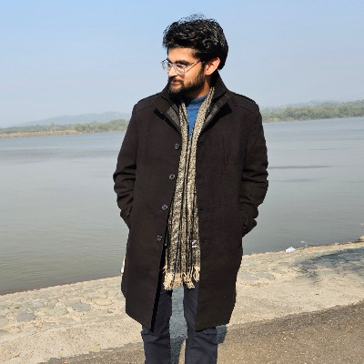

Hi — I'm Kartik. I like cats, pizzas, and thinking hard about the computational nature of quantum many-body systems. I'm currently a Master's student in Computer Science at the Hamburg University of Technology (TUHH), working in the group of Prof. Martin Kliesch at the Institute for Quantum Inspired and Quantum Optimization.
I hold a B.Tech. in Computer Science & Engineering from the Indian Institute of Technology Goa (2019–2023). After graduating I joined IIT Delhi's Vision Lab, where I worked on deep learning problems in computer vision, leading to a publication at ACCV 2024.
In 2024 my interests shifted decisively toward quantum complexity. I did independent research in Quantum Hamiltonian Complexity with a focus on the quantum PCP conjecture and its hardness-of-approximation formulation — work that was warmly received by the community. I also collaborated with researchers at the Quantum Information Theory Group at Seoul National University's Research Institute of Mathematics. My research spans Quantum Hamiltonian Complexity, Quantum Learning Theory, and Quantum Certification.
I'm always happy to discuss and collaborate on problems in Quantum Hamiltonian Complexity, Quantum PCP, Quantum Learning Theory, and related areas. If you're thinking about something in the same orbit, feel free to reach out at Kartik.anand@tuhh.de.